A continuación veremos la función, origen e inserción de algunos músculos clave de la parte anterior y posterior del cuerpo:
Deltoides:
Función: Prácticamente van a ser todas las del hombro.
- Flexión – extensión.
- Abducción – aducción.
- Rotación interna – externa.
Origen:
- Porción clavicular: en la cara anteroposterior del extremo externo de la clavícula.
- Porción acromial: en el acromion.
- Porción espinal: en toda la espina del omoplato.
Inserción: Todos los vientres musculares van a confluir en la cara lateral externa del tercio medio del húmero.
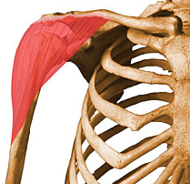
Imagen de Michael Richardson disponible en Muscle Atlas
Pectoral Mayor:
Función: Flexión y aducción del brazo. Este músculo recibe el nombre de músculo del "abrazo".
Origen:
- Parte clavicular: en la cara anterior de los 2/3 mediales de la clavícula. Son fibras descendentes.
- Parte external: en las articulaciones esternocostales, desde la 1ª a la 6ª. Son fibras horizontales.
- Parte abdominal: en los cartílagos costales 7º, 8º y 9º. Se continúan con las fascias de los músculos anchos del abdomen. Son fibras ascendentes.
Inserción: Se inserta en el hueso del húmero.
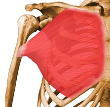
Bíceps Braquial:
Función: Es flexor del brazo.
Origen:
Tiene 2 cabezas:
- La larga: es la más externa. Se origina en el tubérculo supraglenoideo del omóplato.
- La corta: se origina en el apófisis coracoides.
Inserción: ambos vientres musculares se unen para formar un tendón aplanado que se inserta en la tuberosidad del radio.
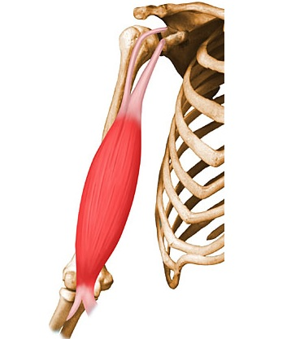
Imagen de Michael Richardson disponible en Muscle Atlas
Recto del Abdomen:
Función: Su tono contribuye a mantener la posición erecta y a mantener a las vísceras en su posición. Produce flexión de la columna vertebral a través de las costillas. Su tono limita la inspiración máxima y favorece la espiración.
Origen: En el borde superior del pubis por medio de un pequeño tendón.
Inserción: En la cara anterior de los 5º, 6º y 7º cartílagos costales y apéndice xifoides.
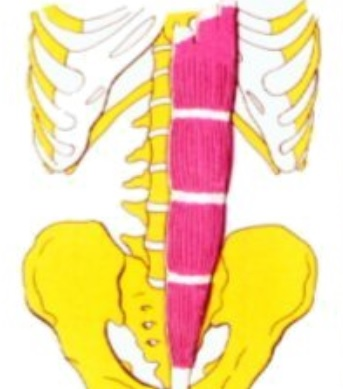
Imagen de Michael Richardson disponible en Muscle Atlas
Cuádriceps:
Es el músculo más fuerte del cuerpo humano. Se encuentra situado en la parte anterior del muslo. El nombre “cuádriceps femoral” proviene del Latín y significa “músculo de cuatro cabezas”. Está formado por cuatro músculos individuales: el recto femoral, el vasto medial, el vasto lateral y el vasto intermedio. Estos músculos se originan en lugares distintos, pero comparten un tendón común (tendón del músculo cuádriceps femoral) el cual se inserta en la patela (rótula). La función del músculo cuádriceps femoral es extender la pierna al nivel de la articulación de la rodilla y flexionar el muslo al nivel de la articulación de la cadera.
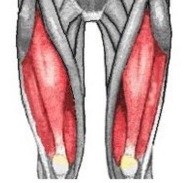
Imagen de Michael Richardson disponible en Muscle Atlas
Tibial anterior:
Función: Sobre el tobillo: flexor, aductor y supinador.
Origen: En los 2/3 proximales de la cara externa de la tibia.
Inserción:En la cara plantar de la 1ª cuña y base del I metatarsiano, rodeando al escafoides.
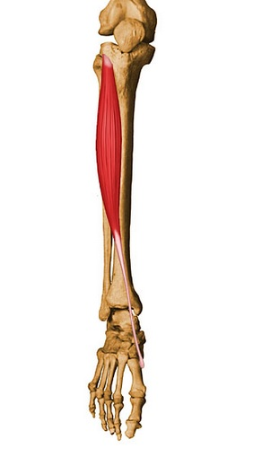
Imagen de Michael Richardson disponible en Muscle Atlas
Tríceps Braquial:
Músculo de 3 cabezas a las cuáles se les da el nombre de “vastos” (interno, externo, medio o largo).
Función: Extensión del codo.
Origen:
- El vasto medio o largo: en el tubérculo infraglenoideo de la escápula.
- El vasto externo: en la cara posterior del 1/3 superior del húmero, a lo largo del borde externo.
- El vasto interno: en el borde interno de la cara posterior de los 2/3 inferiores del húmero.
Inserción: Las 3 cabezas se reúnen en un tendón común ancho y plano que termina en la cara superior del olécranon.
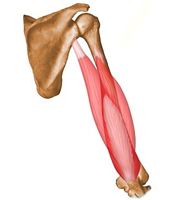
Imagen de Michael Richardson disponible en Muscle Atlas
Dorsal Ancho:
Función: abducción, extensión, rotación interna.
Origen: En una línea continua en todas las apófisis espinosas desde la 7ª vértebra dorsal hasta la cresta del sacro.
Inserción: Todas las fibras van a terminar en un pequeño tendón y en el canal bicipital del húmero.
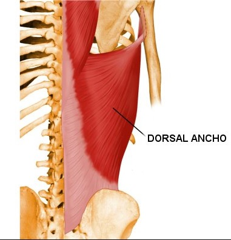
Imagen de Michael Richardson disponible en Muscle Atlas
Trapecio:
Función: Elevación y rotación del omóplato.
Origen:
- Fibras superiores: desde la espina del occipital se dirige a las apófisis espinosas de la 7ª vértebra cervical.
- Fibras medias: desde las apófisis espinosa de la 7ª vértebra cervical a la 3ª dorsal.
- Fibras inferiores: desde la apófisis espinosa de la 4ª dorsal a la 12ª dorsal.
Inserción:
- Fibras superiores: 1/3 externo del borde superior de la clavícula.
- Fibras medias: acromion.
- Fibras inferiores: borde superior de la espina del omóplato.
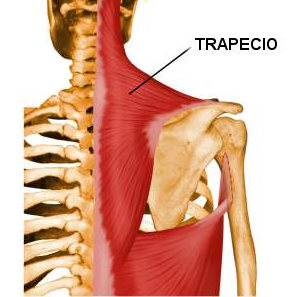
Imagen de Michael Richardson disponible en Muscle Atlas
Glúteo mayor:
Función: Extensión del muslo, rotación externa del muslo y estabilización de la pelvis.
Origen: En los 2/3 superiores de la fosa iliaca externa, en la parte posterior del sacro y en el coxis.
Inserción: La mayor parte de las fibras de este músculo se insertan en el tracto iliotibial.
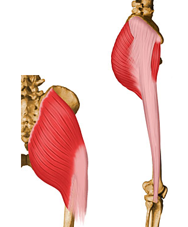
Imagen de Michael Richardson disponible en Muscle Atlas
Isquiotibiales:
Grupo muscular que se compone por el bíceps femoral, el semitendinoso y el semimembranoso.
Función: Son extensores de la cadera y flexores de la rodilla. Los músculos isquiotibiales se encuentran directamente relacionados con el mantenimiento de la postura del cuerpo.
Origen: Estos tres músculos se originan en la zona baja de la pelvis, específicamente en el hueso coxal en la porción denominada isquion.
Inserción: Su lugar de inserción es en la parte superior de la tibia. Sin embargo aunque cada uno se inserta en el mismo hueso, lo hacen en un área diferente.
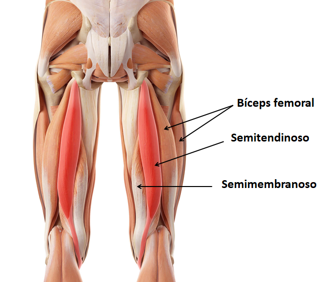
Imagen de Michael Richardson disponible en Muscle Atlas
Gemelos:
Función: Los músculos gemelos son responsables de la flexión plantar del pie, lo que significa que ayudan a levantar el talón del suelo al caminar o correr. También son importantes para mantener el equilibrio, la estabilidad del tobillo y la pierna.
Origen: Se origina en la parte superior de la tibia y el peroné
Inserción: Se insertan en el calcáneo (hueso del talón) a través del tendón de Aquiles.
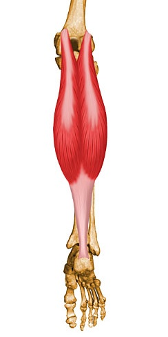
Imagen de Michael Richardson disponible en Muscle Atlas
Estos músculos desempeñan roles fundamentales en la postura y movilidad del cuerpo, tanto en la parte anterior como en la posterior. Al realizar ejercicios específicos de fortalecimiento y estiramiento, se logra un equilibrio muscular óptimo que se traduce en una postura adecuada.
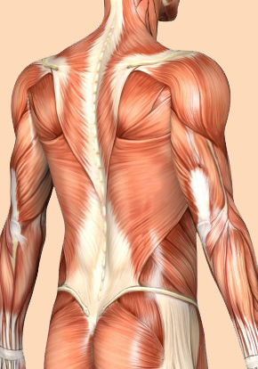
Imagen tomada de Pinterest